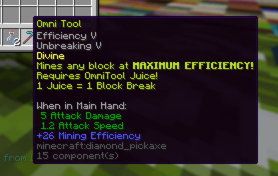

MAXIMIZE your Mining Efficiency!
Added
Omni Tool
TWO new Tools have been added, the Iron and Diamond Omni Tool!
IRON Omni Tool: 15,000 Gems
DIAMOND Omni Tool: 15,000 Gems + IRON Omni Tool

Juicer Machine
Using your Omni Tool is NOT cheap!
To power your Omni Tool, you must buy Omni Juice!
10 Gems = 1 Juice
$100 = 1 Juice
1 Juice = 1 Block Break
OmniTool Mastery
Finally.. a new MASTERY!
Gain XP by using your brand new Omni Tools!
Level 5: 10% Chance to not consume Omni Juice
Level 10: 25% Chance to not consume Omni Juice
Changed
RAP Improvements
Due to demand, the RAP Leaderboard has been removed while we allow item values to balance out. Significant changes have been made to the backend that prevents RAP manipulation, and we expect to re-introduce this leaderboard very soon.
Addressing Dupes
During the early stages of CAB, many dupes were quickly caught and patched. Many of these dupes were not abused extensively, and appropriate rollbacks to users were made. As I moved away from fixing bugs to work on content, some issues went un-noticed. These dupes were abused more prevalently. Dupes have entirely arose from our "Marketplace" system, and I've thus made the decision to permanently close our custom Marketplace until further notice.
This deeply saddens us, as I intend for trading and economy to be a primary part of the server. Coding our own system also gives us far more control. The only reason many dupes did not cause widespread issues was because it was OUR system.
Moving forward, I will be re-working the Marketplace from scratch, and will be thoroughly tested before going live to the server.
FYI: Any duped items are NOT in the economy. Players involved have been permanently removed and recognised duped items are deleted when a player logs in.
I'd also like to apologise for a very lack-luster Christmas Update. It was rushed and should not have been released in that state. Going forward, content updates will not have a set schedule.
Fixed
- Removed Christmas Drops and Gift Machine
~ From the bottom of my heart, thank you for your support.